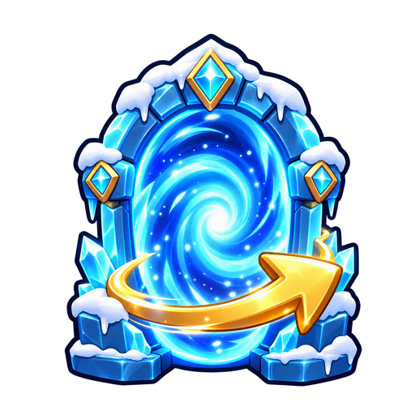

teleport
[512, 512] RGBA
Generation prompt
Use case: stylized-concept. Asset type: individual transparent PNG icon for the existing polished Roblox snowplow game GUI. One centered glossy chunky cartoon game UI icon readable at 48 to 64 pixels. Bold clean dark navy contour, crisp icy cyan highlights, rounded toy-like forms, saturated blue with warm golden accents and subtle snow. Genuine transparent background; square canvas; roughly 12 percent clear padding on all sides. Object fully within frame. No words, letters, numbers, price, watermark, card, square background, checkerboard, scenery or ground plane. A single standalone asset, not a collage or sheet. Subject: One magical upright oval teleport portal with a chunky icy cyan frame, snow cap, glowing blue swirl in its opening, a small golden curved travel arrow crossing the bottom. Instantly recognizable TELEPORT, not a compass. Simple bold silhouette.